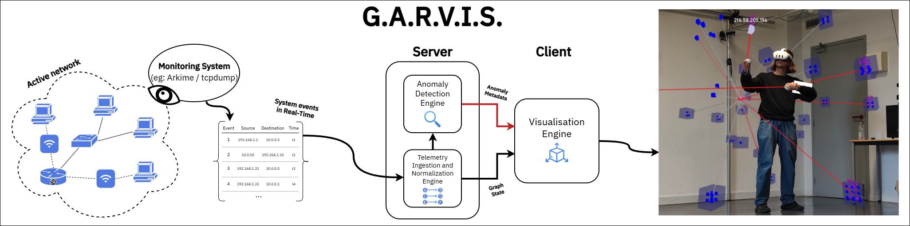

Présentation et contexte
Au cours de mon stage de fin de Master en Imagerie et 3D j'ai éffectué un stage de recherche au sein du laboratoire LIRIS durant lequel je me suis focalisé sur des graphes issus de la surveillance réseau et système informatique avec les noeuds représentant des machines ou des ressources et les arêtes les différents flux et évènements du système. Ces graphes représentent des jumeaux numériques pour les systèmes informatiques.
Le stage a eu pour objectif principal d'explorer une immersion dans ces jumeaux numériques en implémentant des algorithmes adaptés à la mise en forme et au rendu immersif de ces graphes (layouts 3D, clustering) permettant des interactions naturelles avec le graphe en AR (sélection de noeuds, filtrage, zoom, exploration par communautés).

Trois panneaux montrant G.A.R.V.I.S. en réalité augmentée

Architecture de G.A.R.V.I.S. : Intégration de la détection en flux et de la visualisation immersive
Problématique
Explorer un graphe de grande taille est un défi réel, que ce soit en cybersécurité ou en analyse de réseaux. Les outils de visualisation classiques atteignent vite leurs limites: sur un écran 2D, un graphe dense devient rapidement illisible, les patterns suspects se noient dans le bruit visuel et l'analyste se retrouve à reconstruire manuellement ce que l'outil devrait lui montrer clairement.
La réalité augmentée offre une réponse à ce problème: en passant à un espace 3D et immersif, elle permet de percevoir intuitivement la structure d'un graphe et ses dynamiques, là où un écran 2D échoue.
Fonctionnalités
- Visualisation 3D en réalité augmentée: exploration du graphe réseau dans un espace immersif avec ajustement dynamique de la taille et du niveau de détail
- Navigation par clusters dynamiques: les noeuds s'agrègent en clusters qui se déploient automatiquement à mesure que l'analyste s'en approche
- Menu radial: une impulsion du joystick fait apparaître une roue de sélection ancrée sur la manette droite. Les informations du noeud sélectionné et la personnalisation des modèles s'ancrent au poignet gauche et les filtres et paramètres s'affichent en panneaux flottants.
- Détection d'anomalies en temps réel: inspiré de F-FADE , le moteur compare les fréquences de communication et détecte toute déviation par rapport au comportement attendu et le signal directement dans l'espace virtuel
- Filtre d'attaque: isole instantanément le sous-graphe suspect en atténuant le trafic normal pour une analyse ciblée
- Investigation de noeuds: la sélection d'un noeud met en évidence son voisinage immédiat et affiche ses détails dans le menu poignet
- Reconstruction temporelle: contrôles de simulation permettant de mettre en pause, rewind et rejouer les interactions à vitesse variable
Technologies et outils utilisés
L'application a été développée en React pour l'interface web, Three.js pour le rendu 3D et WebXR pour l'intégration de la réalité augmentée. Les tests ont été réalisés sur Meta Quest 3 où l'application restitue une capture réelle de 547 936 flux impliquant 198 machines à 90 images par seconde.
Vidéo de présentation
Dans le cadre de la soumission d'un article de démonstration à l'ACM CCS 2026, dont je suis premier auteur, j'ai réalisé une vidéo présentant les fonctionnalités de l'application:
Bilan
Ce stage m'a permis de découvrir le fonctionnement d'un environnement de recherche et ses exigences, notamment le travail bibliographique en amont, qui a directement orienté les choix de conception de l'application. C'est à travers ce projet que j'ai découvert et approfondi Three.js et WebXR.
Le principal défi technique a été de tenir le temps réel: afficher un demi-million de flux réseau dans un casque sans jamais sacrifier la fluidité. Cela a demandé de refondre l'architecture en client-serveur, de remplacer le moteur de données hérité de Gephi-Lite et de passer à un rendu par instanciation GPU. (90 images par seconde sur Meta Quest 3)